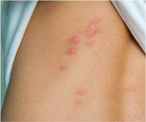
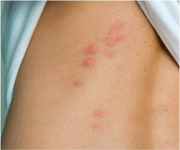

ΥΓΕΙΑ
Έφεραν στο σπίτι αδέσποτη γάτα μαζί με παράσιτα. Τι θα πρέπει να κάνουν οι νέοι ιδιοκτήτες και οι συγγενείς τους;
Γεια και πάλι σε όλους! Είμαι ο Νίκος Παππάς και συνιστώ αυτό το άρθρο σε όλους όσους έχουν κατοικίδια.
Μισό χρόνο πριν, γυρνούσα σπίτι από τη δουλειά και είδα στο δρόμο αυτό το μικρό και χαριτωμένο πλασματάκι.

Ήταν αδέσποτη γάτα, ταλαιπωρημένη με κομμένη ουρά. Πιστεύω ότι την έχασε από τον πάγο ή σε κυνήγι από σκύλους.
Η γυναίκα μου κι εγώ αποφασίσαμε να την πάρουμε σπίτι. Την ταΐσαμε, την πλύναμε και τη βουρτσίσαμε. Αποδείχτηκε αρσενική και τον ονομάσαμε Ρίκο. Τον ερωτευτήκαμε με την πρώτη ματιά. Χρειάστηκε μόλις μια εβδομάδα για να μεταμορφωθεί σε ένα καλοταισμένο και ικανοποιημένο γάτο. Πολύ καλός χαρακτήρας που του αρέσει να κοιμάται στα γόνατά μας.


Αλλά δεν το αποπαρασιτώσαμε. Για να είμαι ειλικρινής, δεν ξέραμε καν πως γινόταν αυτό. Πιστεύαμε ότι το μπάνιο με ένα καλό σαμπουάν ήταν αρκετό. Μετανιώσαμε οικτρά αυτή μας την απόφαση!
 
Η γυναίκα μου ήταν η πρώτη που αρρώστησε. Ξαφνικά άρχισε να παρατηρεί παράξενες κόκκινες πλάκες στο σώμα της. Πρώτα στα χέρια, μετά στην πλάτη και την κοιλιά. Δεν είχε ποτέ αλλεργία παλαιότερα. Αλλά για κάθε περίπτωση, η σύζυγος σταμάτησε να τρώει φρούτα και γλυκά. Τι γίνεται αν υπάρχει τέτοιο πρόβλημα;
Η διατροφή δεν βοήθησε, οι κόκκινες πλάκες δεν εξαφανίστηκαν. Το αντίθετο μάλιστα, έγιναν μεγαλύτερες και έβγαλε πληγές στα χείλη, οι οποίες δεν θεραπεύονταν. Επιπλέον, αντιδρούσε περίεργα στο φαγητό. Πάντα πεινούσε! Σοβαρά, δεν είχα δει ποτέ κοπέλα βάρους 50 κιλών που θα μπορούσε να φάει ένα κιλό χοιρινό στην καθισιά της και να ζητήσει κι άλλο 10 λεπτά αργότερα...
Τρελάθηκα μόλις έπαθα το ίδιο πολύ σύντομα. Η μόνη διαφορά ήταν ότι είχα μόνο 5 πλάκες, αλλά ήταν ιδιαίτερα επώδυνες με έντονη φαγούρα! Έξυνα τα χέρια μου μέχρι να αιμορραγήσουν και δεν μπορούσα να κάνω τίποτα γι' αυτό. Ένιωθα πείνα, αλλά όχι τόσο όσο η γυναίκα μου. Αντί αυτού, είχα πρόβλημα δυσκοιλιότητας. Δεν μπορούσα να πάω στην τουαλέτα 3-4 μέρες.

Ήμασταν έτοιμοι να επισκεφτούμε έναν γιατρό για να καταλάβουμε τι μας συμβαίνει. Όμως η διάγνωση θα ήταν δύσκολη και δεν είχαμε να ξοδέψουμε μια περιουσία σε εργαστηριακές εξετάσεις!
Μια μέρα, ο Ρίκο δεν χρησιμοποίησε τη λεκάνη του και τα έκανε στο πάτωμα. Άρχισα να το καθαρίζω και αυτό που είδα εκεί με έκανε να ανατριχιάσω. Υπήρχαν πολλοί και τεράστιοι έλμινθες! Προειδοποίηση: αυτή η εικόνα δεν είναι για άτομα με αδύναμη καρδιά, αλλά πρέπει να τη δημοσιεύσω εδώ για να κάνω το μήνυμά μου πιο πειστικό.

"Αυτό είναι!" - σκέφτηκα, "αποδεικνύεται ότι εγώ και η γυναίκα μου έχουμε κολλήσει παράσιτα από το γάτο!"
Δεν ήξερα τι να κάνω, γι' αυτό ρώτησα το γείτονα για συμβουλή. Έχει δύο γάτες και ένα σκύλο, σίγουρα έχει εμπειρία.
Η γειτόνισσα με άκουσε, ήρεμα, και στη συνέχεια είπε ότι η οικογένειά της δεν είχε προβλήματα από παράσιτα. Αλλά όταν τα κατοικίδιά της ήταν μικρά, συχνά είχαν παράσιτα και μολύνθηκε αρκετές φορές. Στη συνέχεια, της είπαν να χρησιμοποιήσει κάποιον αλγόριθμο. Θα το μοιραστώ μαζί σας.
- 1 Αποπαρασιτώστε τη γάτα σας με ειδικά, κτηνιατρικά προϊόντα κάθε 3 μήνες - ακόμα κι αν τα ζωάκια σας ζουν μόνο μέσα και δεν βγαίνουν στο δρόμο. Μπορείτε να φέρετε έλμινθες στο σπίτι με τα παπούτσια και να μολύνετε τόσο τον εαυτό σας, όσο και τα κατοικίδιά σας.
- 2 Αγοράστε τις φυτικές κάψουλες και πάρτε 2 φορές το χρόνο, για 10 μέρες - ακόμα κι αν δεν έχετε παράσιτα, απλώς για πρόληψη. Όσον αφορά τα αντιπαρασιτικά προϊόντα, είναι καλύτερα να αποφεύγετε τη χρήση τους. Παρέχουν το ίδιο αποτέλεσμα με το να πιείτε ένα μπουκάλι ουίσκι με μια γουλιά: λίγα συκώτια ανθρώπων μπορούν να το αντέξουν αυτό!
- 3 Αν δείτε συμπτώματα ότι έχετε μολυνθεί (σκουλήκια στα περιττώματα του κατοικιδίου σας), συνιστώ το για όλους ήρθαν σε έπαφη με σας πρόσφατα: φίλοι, συγγενείς, κλπ.
Όταν επιστρέψαμε στο σπίτι, παραγγείλαμε ένα αντιπαρασιτικό προϊόν για το Ρίκο και το για μας. Παρεμπιπτόντως, σημειώστε ότι το μπορεί να αγοραστεί μόνο από τον επίσημο ιστότοπο του παρασκευαστή. Αλλά αυτό είναι εξαιρετικό - έχετε 100% εγγύηση γνήσιου προϊόντος.
Το προϊόν παραδόθηκε γρήγορα, χωρίς καθυστερήσεις. Αποπαρασιτώσαμε το γάτο αμέσως: του δώσαμε ένα χάπι και μπορούσαμε να δούμε τα κόπρανα καθαρά από σκουλήκια ήδη το επόμενο πρωί. Θα του δώσουμε ένα ακόμη χάπι 3 μήνες αργότερα.

Για μένα και τη γυναίκα μου χρειάστηκε λίγο παραπάνω χρόνος. Ξεφορτώθηκα τις πλάκες στα χέρια μετά από 4 μέρες και μόλις πήγα στην τουαλέτα μετά από 5 μέρες παραλίγο να λιποθυμήσω από την αηδία.
ενα τεραστιο ρολο ελμινθων βγηκε απο μεσα μου!
Αμέσως μετά, ένιωσα καλύτερα. Οι έλμινθες σταδιακά εξαφανίστηκαν από το σώμα μου στις επόμενες 2 μέρες. Η φαγούρα και η πείνα εξαφανίστηκαν επίσης.
Η γυναίκα μου ανέρρωσε κι αυτή. Οι πληγές και τα εκζέματα εξαφανίστηκαν. Η όρεξή της βελτιώθηκε και δεν με σοκάρει με τις τεράστιες μερίδες πια.
Δεν φοβόμαστε πλέον τα σιχαμερά πράγματα που μπορεί να φέρει ο Ρίκο στο σπίτι από το δρόμο. Με το , είμαστε όσο καλά προστατευμένοι που μπορούμε να αφήνουμε τον αγαπημένο μας γάτο να κοιμάται στο κρεβάτι μας και να τον φιλάμε. Είναι πιο ζεστός κι από μάλλινη κουβέρτα!
Μην περιμένετε έως ότου αρχίζουν να βγαίνουν από σας σωροί από σκουλήκια. Αποπαρασιτώστε όχι μόνο τα κατοικίδιά σας, αλλά και τον εαυτό σας. Σας είπα πως, μέσα από αυτό το κείμενο. Ως blogger, κατάφερα να πετύχω μια συμφωνία με τον παρασκευαστή για 50% έκπτωση για όλους μου τους συνδρομητές. Όσοι έχουν ζωάκια στο σπίτι τους θα το εκτιμήσουν. Η φροντίδα ενός κατοικιδίου δεν είναι φθηνή. Μη χάσετε την ευκαιρία σας να γλιτώσετε χρήματα και να προστατεύσετε την οικογένειά σας από τα σιχαμερά παράσιτα.
Αλεξάνδρα πριν 6 ημέρες
Μπορείτε να αναγράψετε τη σύνθεσή του; Θα ήταν καλό για όσους έχουν αλλεργίες.
Κώστας πριν 6 ημέρες
Αγριαθιψιά, κουρκουμάς, ασιατική σεντέλα, ινδικό φραγκοστάφυλο, σελινόριζα. Είναι ακίνδυνο.
Γιάννης πριν 4 ημέρες
Kάνω το ίδιο εδώ και πολύ καιρό. Η γάτα μου είναι γάτα που μπαινοβγαίνει, έρχεται σπίτι μόνο για να φάει και να κοιμηθεί. Παρεμπιπτόντως, κοιμάται μαζί μας. Δεν φοβόμαστε τους έλμινθες. Παίρνουμε το 1-2 φορές το χρόνο, εδώ και 3 χρόνια, και δεν έχουμε μολυνθεί.
Γιώργος πριν 3 ημέρες
Αυτό είναι το θέμα! Όταν υιοθέτησα το σκύλο μου, υπέφερα από σπυράκια. Οι κρέμες, οι αλοιφές και η αποφυγή των γλυκών δεν βοηθούν εδώ και πολύ καιρό. Ευχαριστώ για τη συμβουλή. Θα την ακολουθήσω.
Ανδρέας πριν 3 ημέρες
Ως βιοχημικός, θα έλεγα ότι αυτό είναι ένα πολύ αποτελεσματικό προϊόν. Τα βόταν που περιέχονται στο είναι ασφαλή τόσο για ανθρώπους, όσο και για ζώα, αλλά εξαιρετικά δηλητηριώδη για τα παράσιτα. Σκοτώνουν όλα τα είδη παρασίτων, όχι μόνο οξύουρους ή ασκαρίδες. Το σκοτώνει τα λάμβλια στο συκώτι, όπως και την τοξόκαρα και τα σκουλήκια, στα οποία τα συνηθισμένα αντιπαρασιτικά προϊόντα είναι ανίσχυρα. Το βοηθά επίσης όταν υπάρχουν διάφορα είδη παρασίτων στο ανθρώπινο σώμα.
Αλίκη πριν 2 ημέρες
Είχα σπυράκια στο μέτωπο και πληγές λόγω των παρασίτων όλο αυτό τον καιρό. Πήρα το και όλα τα προβλήματα εξαφανίστηκαν σε μια εβδομάδα.
Άννα πριν 2 ημέρες
Δεν έχω κατοικίδια, αλλά ο γιος μου έφερε αυτά τα σιχαμένα πράγματα στο σπίτι από την άμμο. Τα συμπτώματα ήταν τα ίδια. Χρησιμοποιήσαμε τις κάψουλες και τώρα είναι όλα εντάξει. Ευχαριστώ τη μαμά μου για τη συμβουλή της!
Κλαίρη πριν 1 ημέρα
Τίποτα καινούριο :) Έπαιρνα αυτές τις κάψουλες πριν 4 χρόνια για προληπτικούς λόγους.
Πέτρος πριν 10 ώρες
Ο γάτος σου είναι τέλειος! Θέλω κι εγώ έναν γάτο σαν αυτόν!
Βάλια πριν 5 ώρες
Διάβασα ότι κάθε δεύτερος άνθρωπος στη χώρα μας έχει παράσιτα. Αλλά οι περισσότεροι δεν έχουν ιδέα ότι έχουν.
Ανδρέας πριν 2 ώρες
Έχετε δίκιο. Στο 70% των περιπτώσεων, η ασθένεια είναι λανθάνουσα και μπορεί να διαγνωστεί μόνο μετά από εξέταση. Αυτός είναι ο λόγος για τον οποίο η προστασία από τα παράσιτα είναι απαραίτητη, όπως ο καθαρισμός των δοντιών σας ή το πλύσιμο του προσώπου σας.